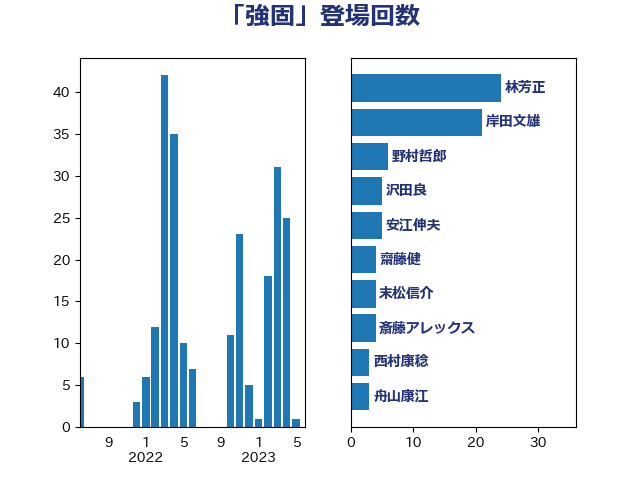

単語「強固」

| 林芳正 | 自由民主党 | 24 回 |
| 岸田文雄 | 自由民主党 | 21 回 |
| 野村哲郎 | 自由民主党 | 6 回 |
| 沢田良 | 日本維新の会 | 5 回 |
| 安江伸夫 | 公明党 | 5 回 |
| 齋藤健 | 自由民主党 | 4 回 |
| 末松信介 | 自由民主党 | 4 回 |
| 斎藤アレックス | 国民民主党 | 4 回 |
| 西村康稔 | 自由民主党 | 3 回 |
| 舟山康江 | 国民民主党 | 3 回 |
| 浜田靖一 | 自由民主党 | 3 回 |
| 松川るい | 自由民主党 | 3 回 |
| 小田原潔 | 自由民主党 | 3 回 |
| 小林鷹之 | 自由民主党 | 3 回 |
| 太栄志 | 立憲民主党 | 3 回 |
| 音喜多駿 | 日本維新の会 | 2 回 |
| 長友慎治 | 国民民主党 | 2 回 |
| 藤田文武 | 日本維新の会 | 2 回 |
| 葉梨康弘 | 自由民主党 | 2 回 |
| 米山隆一 | 立憲民主党 | 2 回 |
| 田村智子 | 日本共産党 | 2 回 |
| 田名部匡代 | 立憲民主党 | 2 回 |
| 河西宏一 | 公明党 | 2 回 |
| 柳ヶ瀬裕文 | 日本維新の会 | 2 回 |
| 松山政司 | 自由民主党 | 2 回 |
| 杉田水脈 | 自由民主党 | 2 回 |
| 斉藤鉄夫 | 公明党 | 2 回 |
| 工藤彰三 | 自由民主党 | 2 回 |
| 高木かおり | 日本維新の会 | 1 回 |
| 青柳仁士 | 日本維新の会 | 1 回 |
| 青山大人 | 立憲民主党 | 1 回 |
| 鈴木貴子 | 自由民主党 | 1 回 |
| 鈴木敦 | 国民民主党 | 1 回 |
| 鈴木憲和 | 自由民主党 | 1 回 |
| 鈴木俊一 | 自由民主党 | 1 回 |
| 金城泰邦 | 公明党 | 1 回 |
| 野田聖子 | 自由民主党 | 1 回 |
| 野中厚 | 自由民主党 | 1 回 |
| 野上浩太郎 | 自由民主党 | 1 回 |
| 道下大樹 | 立憲民主党 | 1 回 |
| 進藤金日子 | 自由民主党 | 1 回 |
| 足立康史 | 日本維新の会 | 1 回 |
| 谷合正明 | 公明党 | 1 回 |
| 若松謙維 | 公明党 | 1 回 |
| 美延映夫 | 日本維新の会 | 1 回 |
| 笠井亮 | 日本共産党 | 1 回 |
| 竹詰仁 | 国民民主党 | 1 回 |
| 竹内譲 | 公明党 | 1 回 |
| 穀田恵二 | 日本共産党 | 1 回 |
| 秋本真利 | 自由民主党 | 1 回 |
| 礒崎哲史 | 国民民主党 | 1 回 |
| 石井準一 | 自由民主党 | 1 回 |
| 石井啓一 | 公明党 | 1 回 |
| 田村貴昭 | 日本共産党 | 1 回 |
| 田嶋要 | 立憲民主党 | 1 回 |
| 田中健 | 国民民主党 | 1 回 |
| 源馬謙太郎 | 立憲民主党 | 1 回 |
| 浜地雅一 | 公明党 | 1 回 |
| 浅野哲 | 国民民主党 | 1 回 |
| 浅田均 | 日本維新の会 | 1 回 |
| 津島淳 | 自由民主党 | 1 回 |
| 水岡俊一 | 立憲民主党 | 1 回 |
| 柴田巧 | 日本維新の会 | 1 回 |
| 松野博一 | 自由民主党 | 1 回 |
| 松原仁 | 立憲民主党 | 1 回 |
| 杉本和巳 | 日本維新の会 | 1 回 |
| 杉久武 | 公明党 | 1 回 |
| 本田太郎 | 自由民主党 | 1 回 |
| 末松義規 | 立憲民主党 | 1 回 |
| 有村治子 | 自由民主党 | 1 回 |
| 徳永久志 | 立憲民主党 | 1 回 |
| 後藤茂之 | 自由民主党 | 1 回 |
| 岩谷良平 | 日本維新の会 | 1 回 |
| 岡本あき子 | 立憲民主党 | 1 回 |
| 山田勝彦 | 立憲民主党 | 1 回 |
| 山崎誠 | 立憲民主党 | 1 回 |
| 山下芳生 | 日本共産党 | 1 回 |
| 尾身朝子 | 自由民主党 | 1 回 |
| 小西洋之 | 立憲民主党 | 1 回 |
| 宮本岳志 | 日本共産党 | 1 回 |
| 宮崎雅夫 | 自由民主党 | 1 回 |
| 奥下剛光 | 日本維新の会 | 1 回 |
| 堀井巌 | 自由民主党 | 1 回 |
| 吉良よし子 | 日本共産党 | 1 回 |
| 吉田宣弘 | 公明党 | 1 回 |
| 古川禎久 | 自由民主党 | 1 回 |
| 北神圭朗 | 無所属 | 1 回 |
| 伊波洋一 | 無所属 | 1 回 |
| 仁木博文 | 無所属 | 1 回 |
| 中曽根康隆 | 自由民主党 | 1 回 |
| 上川陽子 | 自由民主党 | 1 回 |
| 三浦靖 | 自由民主党 | 1 回 |